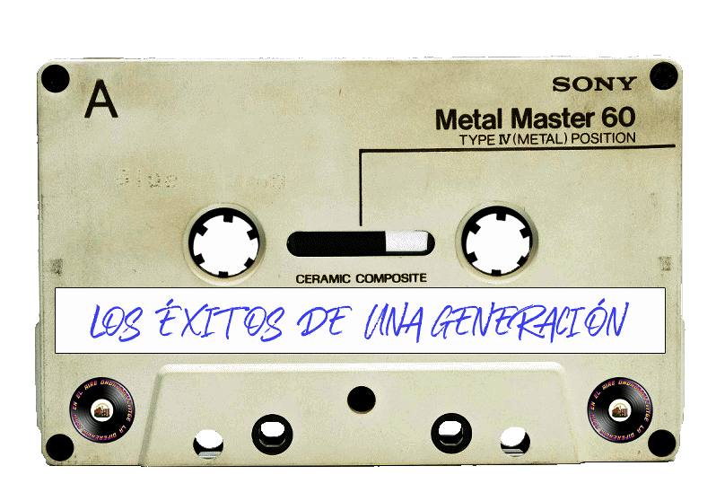

01. Desperados - La tormenta
02. Dinamita pa los pollos - Bourbon
03. Ducan Dhu - Cien gaviotas
04. Duncan Dhu - Esos ojos negros
05. Duncan Dhu - Jardin de rosas
06. Duncan Dhu - Una calle de paris
07. El ultimo de la fila - Canta por mi
08. El ultimo de la fila - Que bien huelen los pinos
09. El ultimo de la fila - A jazmin
10. El ultimo de la fila - A veces se enciende
11. El ultimo de la fila - Andar hacia los pozos no quita la sed
12. El ultimo de la fila - Aviones plateados
13. El ultimo de la fila - Huesos
14. El ultimo de la fila - Insureccion
15. El ultimo de la fila - Llanto de pasion
16. El ultimo de la fila - Musico loco
17. El ultimo de la fila - Querida milagros
18. El ultimo de la fila - Sara
19. El ultimo de la fila - Ya no danzo al son de los tambores
20. Heroes del Silencio - Agosto
21. Heroes del Silencio - Decadencia
22. Heroes del Silencio - El estanque
23. Heroes del Silencio - Entre dos tierras
24. Heroes del Silencio - Flor venenosa
25. Heroes del Silencio - Hace tiempo
26. Heroes del Silencio - Heroe de leyenda
27. Heroes del Silencio - La lluvia gris
28. Heroes del Silencio - Maldito duende
29. Heroes del Silencio - Mar adentro
30. Heroes del Silencio - Oracion
31. Hombres G - Devuelveme a mi chica
32. Hombres G - Marta tiene un marcapasos
33. Hombres G - Venezia
34. Jarabe de Palo - A lo loco con P. Tinto
35. Jarabe de Palo - Agua
36. Jarabe de Palo - Agustito con la vida
37. Jarabe de Palo - Dejame vivir
38. Jarabe de Palo - Depende
39. Jarabe de Palo - Dos dias en la vida
40. Jarabe de Palo - El lado oscuro
41. Jarabe de Palo - Pura sangre
42. La Frontera - Judas el miserable
43. La Guardia - Mil calles llevan hacia ti
44. La Union - Lobo hombre en Paris
45. Los Ronaldos - Adios papa
46. Los Ronaldos - Ana y Choni
47. Los Ronaldos - Dime por qué
48. Los Ronaldos - Guardalo
49. Los Ronaldos - Idiota
50. Los Ronaldos - Por las noches
51. Los Ronaldos - Que vamos a hacer
52. Los Ronaldos - Si si
53. Manolo Garcia - A San Fernando
54. Manolo Garcia - Pájaros de barro
55. Mecano - barco a Venus
56. Mecano - Me cole en una fiesta
57. Mecano - Hoy No Me Puedo Levantar
58. Mecano - Maquillaje
59. Radio Futura - Escuela del Calor
60. Radio Futura - Paseo con la negra flor
61. Radio Futura - Semilla negra
62. Radio Futura - Veneno en la Piel